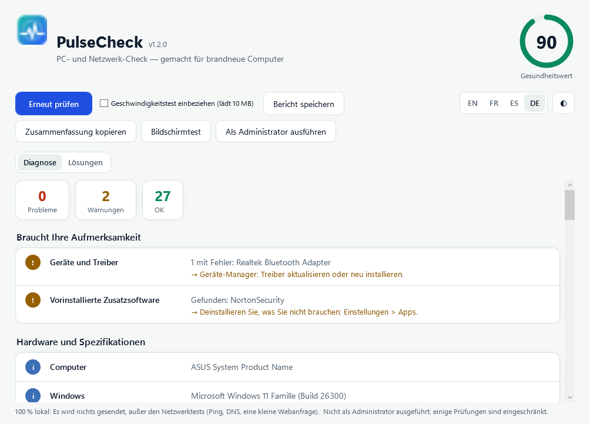
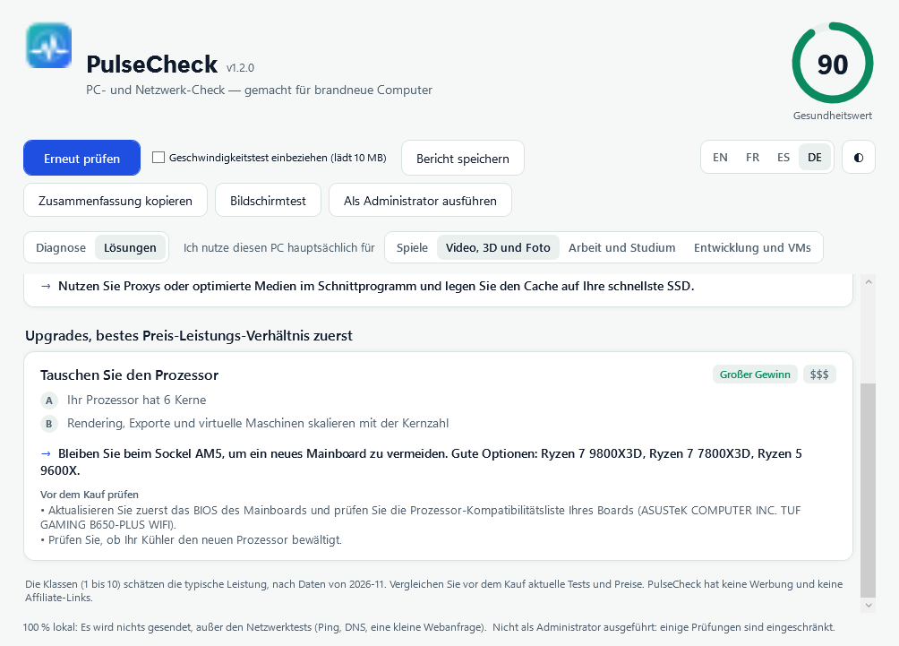

Kostenlos · Open Source · Windows 10 und 11
Prüfen Sie Ihren neuen PC, bevor die Rückgabefrist abläuft.
PulseCheck untersucht einen Computer in etwa einer Minute: echte Spezifikationen, Akkuverschleiß, Speichergeschwindigkeit, vorinstallierte Software, Laufwerkszustand, Sicherheit und Ihre Internetverbindung. Ergebnisse in klarer Sprache. Es wird nichts hochgeladen.
GesundheitswertZwei Punkte zum Anschauen
- Windows-AktivierungAktiviert
- Speichergeschwindigkeit5600 MT/s, mit Nenngeschwindigkeit
- Akkuzustand18 % Verschleiß. Ein neuer Laptop hat kaum welchen
- Vorinstallierte ZusatzsoftwareTest-Virenschutz und 2 Werbe-Apps
- LaufwerkszustandSSD, gesund
- Router2 ms, 0 % Paketverlust
Ein klarer Bericht, in Ihrer Sprache

Eine Prüfung, vier Bereiche
Zu jedem Ergebnis gibt es eine verständliche Lösung, einen Gesundheitswert von 100 und einen Bericht zum Teilen.
- Hardware
- Prozessor, Arbeitsspeicher, Grafik, Laufwerke, Bildschirmauflösung und Bildwiederholrate, BIOS-Version und Seriennummer.
- Prüfungen für neue PCs
- Windows-Aktivierung, Speichergeschwindigkeit und Kanäle, Akkuverschleiß, vorinstallierte Zusatzsoftware, Laufwerkstyp und -zustand.
- Zustand und Sicherheit
- Prozessor- und Speicherauslastung, freier Speicherplatz, fehlerhafte Treiber, Autostart-Programme, Defender, Firewall, Secure Boot, TPM, Windows-Updates, Abstürze und Laufwerksfehler.
- Netzwerk
- Router, Ping, Paketverlust, Jitter, WLAN-Signal, DNS-Geschwindigkeit, Webzugriff, Proxy und VPN, dazu ein optionaler Geschwindigkeitstest.
Lösungen, nicht nur Probleme
Sagen Sie PulseCheck, wofür Sie den PC nutzen. Es vergleicht Ihre Hardware mit Ihrem Bildschirm und Ihrem Einsatz und erklärt, was sich zu ändern lohnt, nach Nutzen geordnet.
Schnelle Verbesserungen, kostenlos
Bildwiederholrate bei 60 Hz festgehängt, Speicher unter Nenngeschwindigkeit, alter Grafiktreiber, zu viele Autostart-Programme: in Minuten behoben, mit dem genauen Menü.
Einstellungen für Ihre Hardware
Grafik-Voreinstellungen passend zu Karte und Bildschirm, mit dem richtigen Upscaler (DLSS, FSR oder XeSS) und einer sinnvollen Bildratenbegrenzung.
Upgrades, erklärt mit A + B
Ihre Grafikkarte (A) und Ihr 1440p-Bildschirm mit 144 Hz (B) verlangen eine Karte der Klasse 7. Jeder Vorschlag zeigt seine Gründe, eine Preisspanne und was Sie zuerst prüfen sollten, etwa das Netzteil.

Gemacht für den Tag des Auspackens
Angebote lassen sich schwer überprüfen, und Rückgabefristen sind kurz. Diese Prüfungen zeigen, ob das Gerät dem entspricht, was Sie bezahlt haben.
Akkuverschleiß
Ein als neu verkaufter Laptop sollte kaum Verschleiß zeigen. Ein abgenutzter Akku kann auf ein gebrauchtes oder generalüberholtes Gerät hindeuten.
Speicher mit Nenngeschwindigkeit
Speicher läuft oft langsamer als beworben, bis XMP oder EXPO im BIOS aktiviert ist. Auch Single-Channel wird gemeldet.
Vorinstallierte Zusatzsoftware
Findet Test-Virenschutz und Werbe-Apps, damit Sie sie entfernen können, bevor sie den PC ausbremsen.
Pixelfehler-Test
Vollbild-Farben zeigen defekte oder hängende Pixel in Sekunden, solange der Bildschirm noch zurückgegeben werden kann.
Findet heraus, wo die Verbindung abbricht
Die meisten Tools sagen nur „kein Internet“. PulseCheck zeigt Ihnen, welches Glied der Kette ausgefallen ist.
- Ihr PCAdapter und IP-Adresse
- RouterPing und WLAN-Signal
- AnbieterPing zu 1.1.1.1 und 8.8.8.8
- DNSNamensauflösung und Webzugriff
| PulseCheck erkennt | Das bedeutet | Versuchen Sie |
|---|---|---|
| Der Router antwortet nicht | Lokales Problem: Kabel, WLAN oder Router | Kabel oder WLAN prüfen, dann den Router neu starten |
| Der Router antwortet, das Internet nicht | Problem bei Router-Box oder Anbieter | Box 30 Sekunden neu starten, dann den Anbieter kontaktieren |
| Internet funktioniert, Namen werden nicht aufgelöst | DNS-Problem | Zu 1.1.1.1 oder 8.8.8.8 wechseln |
Gebaut, um Vertrauen zu verdienen
Sie starten ein Programm, das Ihren PC ausliest. Sie sollten es vorher prüfen können.
Open Source
Jede Zeile ist auf GitHub unter der MIT-Lizenz öffentlich. Lesen, prüfen, selbst kompilieren.
Nur lesend
PulseCheck betrachtet Ihren PC und schlägt Lösungen vor. Es verändert Ihr System nie.
Lokal by Design
Kein Konto, keine Telemetrie, nichts wird hochgeladen. Nur der Verbindungstest nutzt das Netzwerk, mit den in der Datenschutzerklärung genannten öffentlichen Servern.
Überprüfbare Versionen
Jede Version wird von GitHub Actions aus dem öffentlichen Quellcode gebaut und mit SHA-256-Hash und signierter Build-Bestätigung veröffentlicht.
Eine ruhige Website
Keine Cookies, keine Analyse, keine fremden Schriften oder Skripte auf dieser Seite.
PulseCheck herunterladen
Eine Datei, kostenlos, kein Konto.
PulseCheck.exe herunterladenWindows 10 oder 11, 64 Bit · Etwa 63 MB · Keine Installation, .NET ist enthalten
So starten Sie
- Datei herunterladen und PulseCheck.exe doppelklicken.
- Zeigt Windows „Der Computer wurde durch Windows geschützt“, klicken Sie auf Weitere Informationen und dann auf Trotzdem ausführen.
- Klicken Sie auf Meinen PC prüfen. Für die vollständigsten Ergebnisse wählen Sie Als Administrator ausführen.
Warum warnt mich Windows?
SmartScreen warnt vor jedem Programm, das noch nicht oft heruntergeladen oder digital signiert ist. PulseCheck ist noch nicht signiert. Wenn Sie Gewissheit wollen, prüfen Sie die Datei wie rechts gezeigt.
Download überprüfen
Vergleichen Sie die Datei mit dem Hash auf der Release-Seite und bestätigen Sie, dass sie aus diesem Repository gebaut wurde.
# 1. Mit dem Hash in PulseCheck.exe.sha256 auf der Release-Seite vergleichen Get-FileHash .\PulseCheck.exe -Algorithm SHA256 # 2. Bestätigen, dass der Build aus dem öffentlichen Quellcode stammt (GitHub CLI nötig) gh attestation verify .\PulseCheck.exe --repo Brillant000/PulseCheck
Fragen
Ist es sicher? Was wird gesendet?
Es wird nichts hochgeladen und es gibt keine Telemetrie. PulseCheck liest Informationen von Ihrem PC und speichert einen Bericht nur dort, wo Sie es festlegen. Die Netzwerktests kontaktieren öffentliche Server: Ping, DNS, eine kleine Webanfrage und ein optionaler 10-MB-Geschwindigkeitstest. Die Datenschutzerklärung listet alle auf.
Ändert es etwas an meinem PC?
Nein. Es liest nur und schlägt Lösungen vor, die Sie selbst anwenden.
Kann es erkennen, ob ein PC gebraucht oder generalüberholt ist?
Es zeigt Hinweise, etwa Akkuverschleiß oder fehlende Aktivierung. Das sind Indikatoren, keine Beweise.
Brauche ich Administratorrechte?
Für die meisten Prüfungen nicht. Wählen Sie Als Administrator ausführen für die TPM-Prüfung und einige weitere.
Ist es wirklich kostenlos?
Ja. Es ist kostenlos und quelloffen unter der MIT-Lizenz, ohne Werbung und ohne Bezahlversion.
Sagt es mir, welche Grafikkarte oder welchen Speicher ich kaufen soll?
Ja. Nach einer Prüfung vergleicht der Reiter Lösungen Grafikkarte, Prozessor, Speicher, Laufwerke und Bildschirm mit Ihrem Einsatz (Spiele, Video und 3D, Arbeit, Entwicklung) und erklärt, was sich zu verbessern lohnt und warum. Die Leistungsklassen sind Schätzungen, und es gibt weder Werbung noch Affiliate-Links: Vergleichen Sie vor dem Kauf aktuelle Tests und Preise.
Welche Sprachen werden unterstützt?
English, Français, Español und Deutsch. Weitere lassen sich ergänzen: siehe Repository.